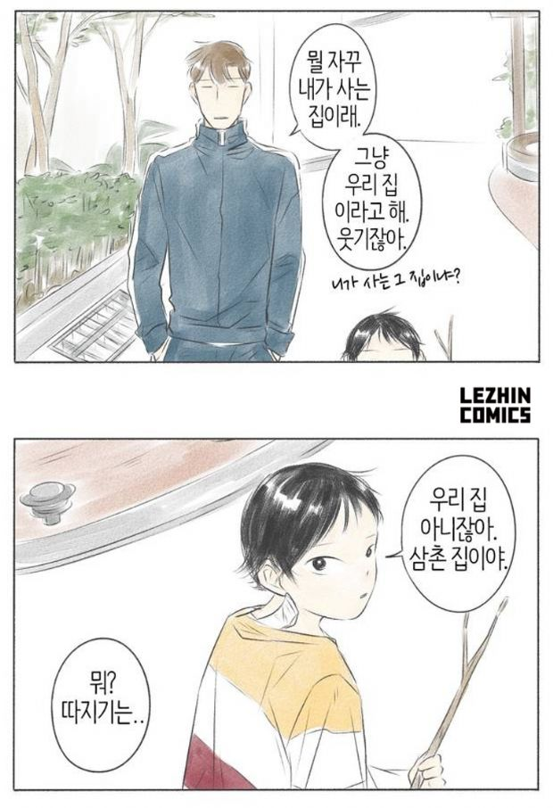

대중문화는 현재를 사는 우리들의 이야기다.
그 중에서도 웹툰은 요즘 사람들에게 익숙한 디지털 디바이스인 스마트폰을 통해 주로 전달되면서도, 드라마나 예능 등 쉴 틈 없이 연속적으로 진행되는 콘텐츠와 다르다. 감상할 때 차분히 생각을 정리하거나 자신을 되돌아볼 수 있는 여백의 미학을 갖고 있다.
이런 공감과 반추의 매력 때문에, 정서적 위안과 위로를 원하는 이들이 웹툰을 많이 찾고 있다. 이에 지디넷코리아는 레진코믹스와 함께 지친 일상을 잠시 잊을 수 있는 다양한 웹툰 속 이야기를 소개하고자 한다.
애인 없고 연애하고 싶은 마음 없고 결혼할 생각 전혀 없는 서른세살의 미혼 한수. 나홀로족 삶을 추구하는 한수는 누군가를 만나도 만나지 않아도 사람은 결국 혼자라며, 혼자가 진리라고 생각하는 독신주의자다.
레진코믹스 웹툰 ‘친하게 지내자’(작가 영일)는 사랑을 믿지 않는 로맨스 소설가 한수와, 아홉살 조카 모나가 한집 살이를 하는 시점에서 이야기가 시작된다.
한수는 누나가 세상을 떠난 뒤 조카의 보호자가 됐다. 혼자의 삶에 익숙한 그는 누군가와 함께 사는 것에 대한 부담감과 나중에 정이 들어 헤어지는 순간을 맞을 때의 감정에 겁을 내 모나와의 한집 살이를 주저했었다.
그런 한수의 속내를 아는 듯 모르는 듯 모나는 삼촌에게 시크하게 대한다. 모나는 이미 엄마를 여읜 뒤 자신을 버린 아빠로 인해 깊은 상처를 받은 터다. 다시 누군가에게 부담스런 존재가 돼 또다시 버려지고 혼자가 되는 경험을 하고 싶지 않다. 그래서 모나는 상처받은 속내를 쉽게 드러내지 않는다. 대신 뭐든 혼자서 덤덤히 해결하려고 애쓴다.
레진코믹스 웹툰 친하게 지내자는 상처받기 싫어 서로의 속내를 감춘 채 한집 살이를 시작한 조카와 삼촌의 이야기다.
아홉살 모나는 게으른 삼촌 한수에게 맛있는 밥을 해달라고 조르는 대신 어린이 요리 프로그램을 틀어 놓거나, 삼촌 대신 바퀴벌레를 잡는 등 또래와 다른 시니컬하고 세상에 달관한 모습을 보인다.
모나의 이런 시니컬함은 가끔 한수에게도 아프게 다가온다. 어느 날 모나는 집에 놀러온 친구에게 “내가 사는 집에 또 놀러와”라고 인사를 건넨다. 한수는 그런 모나에게 “우리집이 아니고 왜 내가 사는 집이냐”고 무심결에 묻는데, 모나는 덤덤히 말한다. “우리집이 아니라 삼촌집이야”.
한수는 비자발적인 상태에서 모나의 보호자가 됐으나 아홉살 아이가 '내가 사는 집은 우리집이 아니라 삼촌집'이라고 무덤덤하게 말하는 모습에 순간 많은 생각이 스치기도 한다.
한수는 아직 아이지만 어른처럼 커가는 조카에 대한 안쓰러움과 미안함으로 게으름에서 벗어나 요리, 청소, 빨래 등 집안일을 챙기며 난생처음 규칙적인 생활을 조금씩 시작한다.
웹툰 친하게 지내자는 게으르고 철없는 삼촌 한수와, 겉으로는 그를 덤덤히 대하지만 내심 믿고 따르는 애어른 조카 모나의 일상을 그린 작품이다.
한수는 모나의 보호자이지만 시시때때로 아홉살 조카에게 보호를 받는다. 그리고 세상과 교류하는데 서툴렀던 그는 모나를 통해 관계의 따뜻함을 배우기 시작한다.
모나 역시 삼촌 한수의 담담한 위로에 슬픔을 달래고 그의 보호와 애정 아래 평범한 유년 생활을 이어간다.
의도한 삶이건 의도치 않는 삶이건 1인 가구가 늘어나는 요즘이다. 사람에 지친 이들이 늘어나고 사람이 그리운 이들도 많아지는 시대다. 나이는 어리지만 생각은 깊은 조카와 아직 철부지 같은 삼촌의 따뜻한 이야기를 그린 친하게 지내자는 어쩌면 지금 시대 우리들을 향한 메시지일지도 모른다. 그래도 친하게 지내자는.
영일 작가의 일상물 웹툰 친하게 지내자는 레진코믹스를 통해 지난해 봄부터 매주 금요일 연재 중이다. 17일 현재 54화까지 무료 공개 중.[☞바로보기: 레진코믹스 웹툰 '친하게 지내자']
백봉삼 기자 | paikshow@zdnet.co.kr
기사 원본